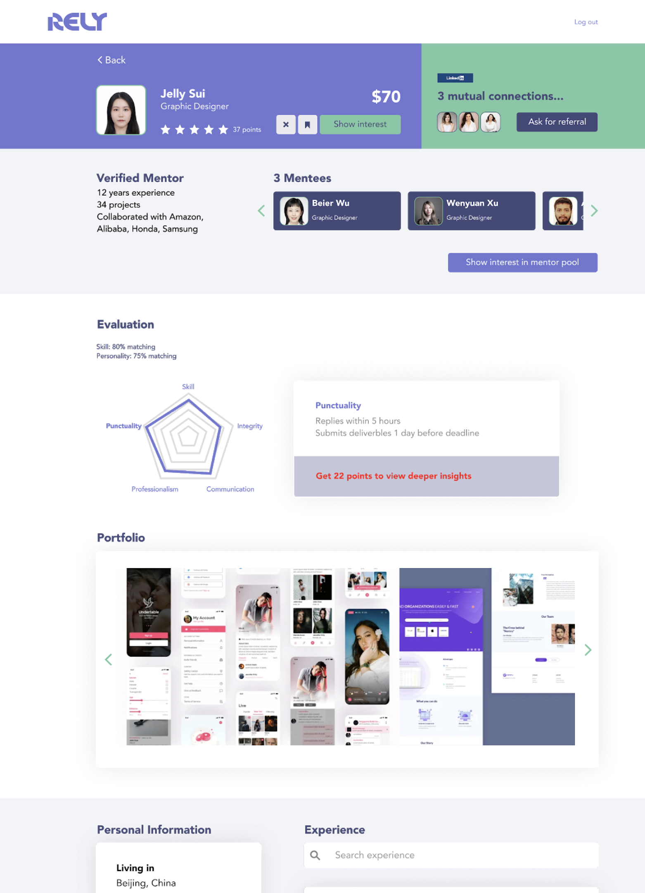
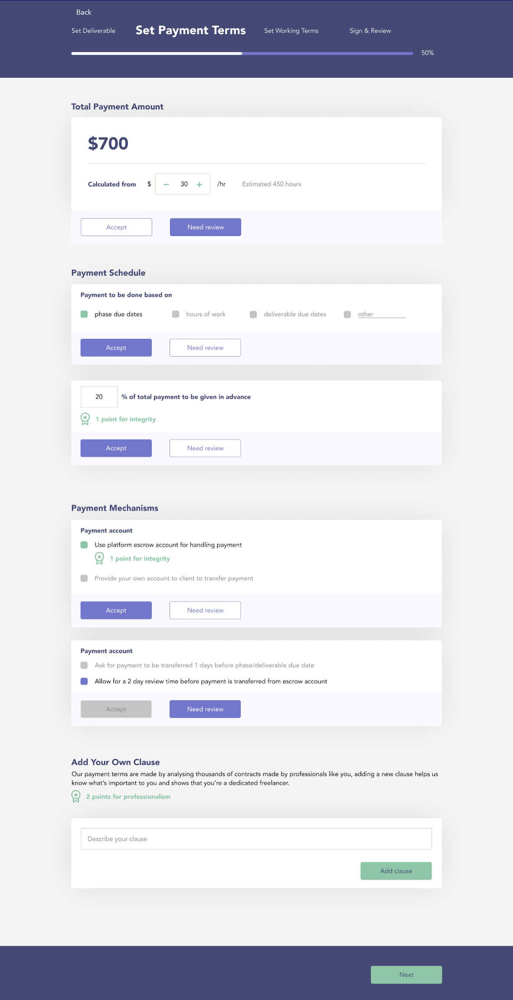
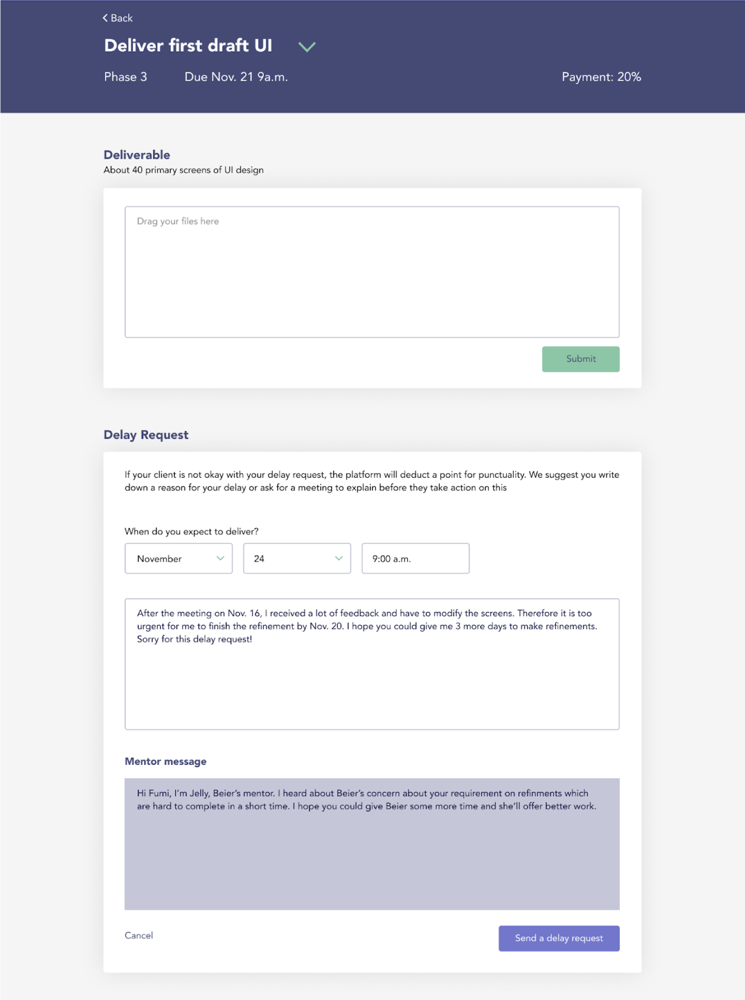

About Project.
The Royal College of Art had instituted a 3 month student-project exploring the future of work for various professions like market traders, office workers and gig economy workers.
My Role
This was a group project and the team consisted of students from different backgrounds like Accounting, Industrial Design, and Visual Design. While our tasks overlapped at various stages, my contributuion was substantial in the research, service definition and project management aspects of the project.
Here's a timeline of the project and the design process our team followed.
Research

Stakeholder Interviews
Our team interviewed 9 freelancers, 4 clients, a freelance platform owner and a recruitment agency as part of our research. Due to the pandemic and international nature of our team, the interviews were conducted across India, US, China & Japan.

Secondary Research
We looked at existing freelance platforms charting out their user flows and reading reviews. We also looked at general industry trends and data around freelancing available in online journals.

Expert Interviews
We spoke to a PhD candidate and an HR professional to understand more about the industry from a professional and academic perspective.
Synthesis

Stakeholder Map of White Collar Gig Work.
Persona
visualisation of freelancer referral networks
Journey
a journey of a freelancer and employer goes through 3 stages.
Insights
Matching
Employers want to reduce the effort needed in screening freelancers hence they turn to word-of-mouth and referral networks they can trust.
Platforms only match based on CV & Job requirements, they don't take into account working styles and freelancer's preferences.
Negotiation
Inexperienced freelancers lack business know-how which makes them vulnerable to employer exploitation.
If scoping of work is not done properly, there are a lot of conflicts in redos, corrections and extra work.
Collaboration
Freelancers need constant communication and feedback to work right while employers find themselves too busy to respond.
Both parties feel disrespected when they don't understand each other's work or put unrealistic demand.
Reframing Problem
All our insights pointed to an issue of trust thus we tried to understand how trust was estalished across geographies.
We also looked at the relationship between trust and work since hunter-gatherer times.
Throughout history, trust was inextricably linked with social values and with the advent of physical contracts, these values became invisible tacit social contracts.
Unfortunately, the invisibility left a lot of room for doubt and in the case of gig-work the values became non-existent.
In full-time work values are established in performance reviews and company culture manifestos, however for freelance work no such social contract exists, each project is new, each client is different.
Concept
Our Insights pointed to a lack of values hence we decided to introduce them as a driving component of our concept.
Rely, our web platform measures both employer and freelancer on the four values - Integrity, Communciation, Punctuality & Professionalism, throughout the collaboration.

The rating also provides a holistic perspective of both parties reducing the risk of exploitation by separating the credible from the non-credible.
The platform has mentors to mediate and uphold our social values. They support young freelancers throughout the collaboration with the employer, they resolve issues and provide credibility to the freelancers as they enter this new work environment.
To compensate the mentors for their time and effort, the platform charges a membership fee from the freelancers based on the support they need. As freelancers grow in their careers they might switch to lower membership fee packages, however the transaction fee the platform gains would increase as they take on larger value projects. Senior freelancers would be given the opportunity to become mentors, making an ecosystem of freelancers and a career progression for them.
Service Blueprint
The blueprint shows how the three components are integrated in the system along with how points are gained at various instances.
Access Logic - To incentivise users to earn points, the platform restricts or provides access to certain features that would otherwise enhance their workflow or make their project succesful.
Prototyping
Testing Feedback
We went through two rounds of testing with 11 freelancers and 3 clients, we tested storyboards, concept diagrams and low-fidelity wireframes.
Positives (I Like)
“I had to go through so many shitty projects and clients before i knew how to fend for myself. The mentor thing is gold, wish I had something like this earlier”
“Usually platforms are a race down to the bottom, they devalue your work. In contrast your approach of quality meets quality is so refreshing. Much Needed.”
“You can be the best in your field but if you have a shit work ethic I will not work with you. I’m so glad your platform addresses this aspect.”
Deltas (I want)
The credit score shows me that freelancer has a working process but the number of points don’t mean that much, maybe you could add a high, medium, low for me to understand better.
“All I need from a freelancer is honesty. You should give points for sending delay request, it shows freelancer has that some integrity and wouldn’t leave me hanging.”
“I really like the communication guide, in fact you could add it much earlier in the process so that both me & client have clarity before starting the project.“
Designs
Matching Stage
Portfolio Evaluation

Freelancer creates profile and gets verified for quality by putting up portfolio for evaluation by our mentors.
Personality Matching
Both freelancer and employers take a personality test and add their working style guide for better matching.
Membership Zones
Employers can search for freelancers in different membership zones, see their credit rating, experience & percentage of personality matching.
Mentor Pools
Employers can find freelancers by mentor pool and select them based on credibility of mentor. They can see detailed insights into the freelancer’s work on the platform if they have high points.
Mentors can review and share job opportunities in the mentor pool that they feel will help their mentees grow.


Jobs shared by mentor will appear on Mentee’s inbox. Users on the regular package who do not have a mentor will have access to all the other dashboard features like points review, FAQ board and Calendar scheduling.
Negotiation Stage
Start Project Contract
As soon as the employer and freelancer match with each other, a project page is setup for them to start the contract & negotiation process.
Any party can begin the contract making (other party has to wait till the contract is sent to them for review). The platform suggests its own template for making contract to help people who are relatively new to the process. Alternatively users can upload their own contracts wherein the platform provides a checklist to make sure the contract is fair to both parties.
Set Contract Terms
Freelancers are given a phasewise work template to detail out their deliverables by date. They can also put in what they require from the client in the project.
Freelancers are given a set of common payment terms and the option to add in their own clauses to the contract.
Freelancers are also suggested working terms to set a good foundation for the working relationship & prevent future conflicts.
Review & Accept Terms
After the freelancer has set their terms, it is sent to the employer for a clause-by-clause review. At this stage, employer can accept a clause, mark it for review or even add their own terms to the contract.
The clauses that both party agree on appear in the accepted section while the ones that are contentious appear in need discussion. Project begins based on the accepted terms only after both parties have clicked on Begin project.
Working Stage
Get Help from mentor
Throughout the project lifecycle, freelancer can take help from the mentor by pressing the contact mentor button and scheduling a call with them.
The platform can transcribe meeting notes if the option is selected. Users can also send a post meeting questionnaire to make sure both parties are on the same page after the meeting.

In case the deliverables can’t be submitted by the deadline, freelancers can send in a delay request to their client. Mentors can also add their comments if needed.
Delay Request
Employers can accept the request or raise concerns by setting up a meeting to discuss it. They have the option to set a new due date and delay payment if need be.
Communication Guide
Freelancers can create a communication guide to help employers express their requirements better.
Feedback
Each time a deliverable is submitted, employers will be nudged to give feedback. Communication guide references would be provided to help them through the process.
Scaling our Solution
Issues
- A certain level of projects need to be done by each user for platform to formulate points and only then can our trust aspect kick in.
- Freelancers might repeatedly face bad clients and since system is based on averages, it would be hard for them to get back up.
- Since system is based on giving points on objective interactions, there is a possibility of users gaming the system to get high points.
- Mentors might be overburdened with helping out freelancers and clients might not want to have them look at company files/data.
- After finding freelancer/client, work can happen independently to avoid paying platform fees.
Opportunities
- Start off each user with an average 17 points and use mentor credibility extensively to enable employers to trust freelancers.
- Mentors can look into freelancer work on request and do a one time reset of their scores.
- Platforms rules will change every year to keep the system dynamic. System will stop rewarding points for behaviours that users start defaulting to, finding new behaviours to promote instead.
- Set fixed number of hours & freelancers mentors need to support as part of their contract with the platform, introduce three party NDAs to make the collaboration smoother.
- Learning Zone can include workshops, learning courses curated by our team to help freelancers grow in their careers.
This project received a high grade and positive feedback from the review jury.